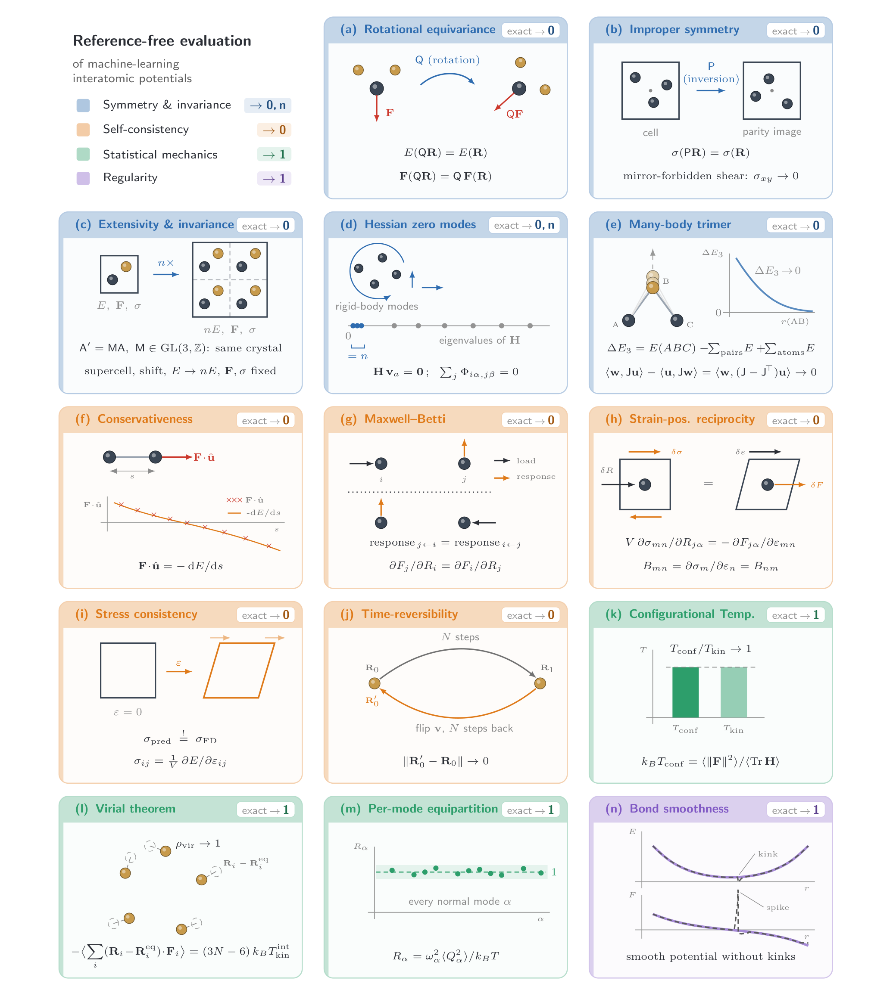
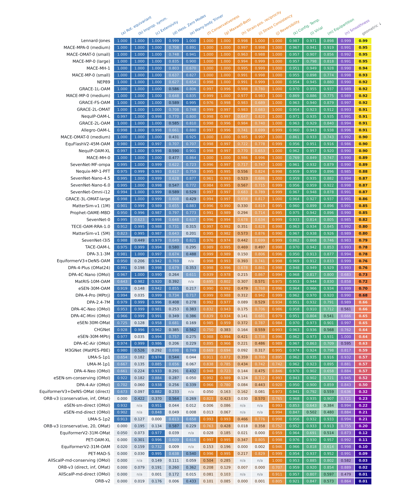
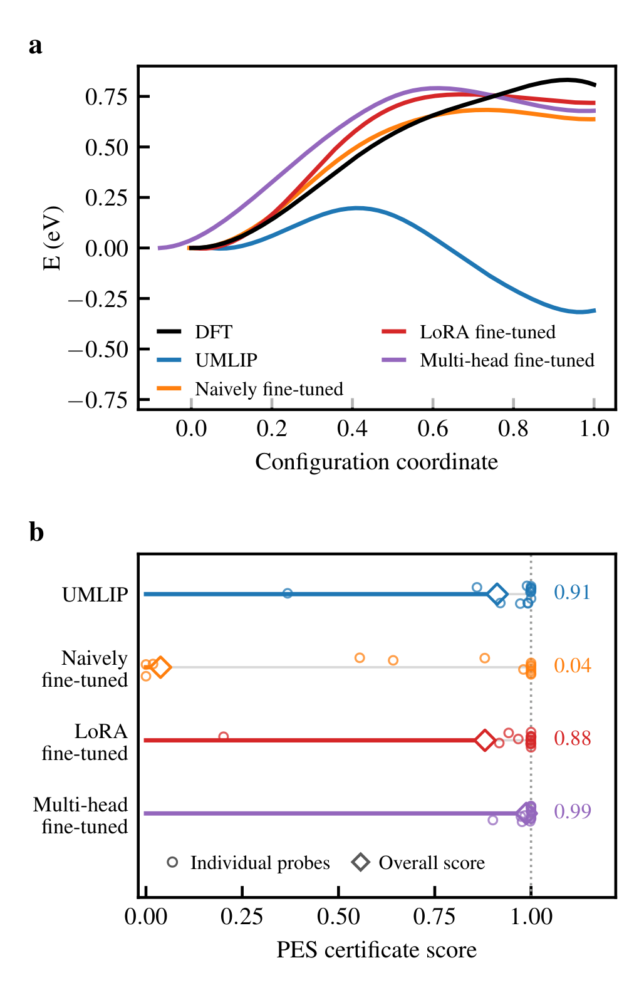

力误差更小，模拟却先崩溃：怎样不靠新DFT数据检验机器学习势面
论文原文 ↗原文：Jonas Hänseroth、Christian Dreßler，Reference-free certification of machine-learning interatomic potentials（机器学习原子间势的无参考认证），arXiv:2610.00585v1。所读PDF署日期为2026年10月2日，含正文与内嵌补充信息，共42页；以下页码均为PDF页码。
机器学习原子间势把原子种类、位置和晶胞变成能量、力与应力，让原本昂贵的原子模拟可以快速运行。选模型时，我们通常先看它与密度泛函理论（DFT）计算的平均误差：同一批结构上，预测的力越接近DFT，似乎越值得信任。然而，分子动力学（MD）需要沿着力不断更新位置，实际经过的是一条连续轨迹。少量结构上的预测很准，并不保证结构之间的能量曲线平滑，也不保证能量、力和应力互相一致。
本文针对的正是这个落差。作者开发了 pescert 测试套件，让模型接受一些小型物理实验：旋转结构、伸缩化学键、改变晶胞、推动原子，再把不同操作得到的输出相互核对。它不需要为这些结构另算DFT，检验的是模型自己的输出能否组成一个合理的势能面。最有说服力的结果来自一次微调对照：测试集力误差最低的模型，在另一种含硫晶体的动力学中很快崩溃；这套检查却事先把它标成了明显异常。
一、方法怎么做：用一个势面的不同“读法”互相核对
能量、力和应力为什么必须接得上
这里的势能面，是原子排列与体系能量之间的函数。在通常的Born–Oppenheimer近似下，电子随原子核位置调整，原子核在这个能量面上运动。力描述能量随原子位置变化的下降方向，应力描述能量随晶胞形变的响应。它们应当来自同一个能量函数，而不是三套互不相干的预测。
这一要求给出了不依赖DFT数值的比较。比如沿一根键移动一个原子：一边直接读取模型的力，另一边用相邻位置的能量差估计能量曲线斜率，两者应该对应。再比如，先推动原子甲、读取原子乙的力响应，然后交换推与读的角色；若力来自光滑的标量能量，两种交叉响应应该相等。这种“能由同一能量函数导出”的性质称为可积性。一旦它被破坏，沿闭合路径移动原子就可能产生非零净功，长时间模拟因而可能积累能量偏移。
另一条线索来自对称性。同一个团簇换个朝向，能量应当相同，力应随着团簇一起转；同一种晶体换一个等价晶胞，计算结果也不应因记账方式改变。作者还检查势面的曲率，即原子被轻微推动后力变化得多快。把所有方向的曲率排成矩阵，就是Hessian矩阵，它决定小振动的刚度。孤立团簇在充分优化的驻点处，整体平移和转动不改变能量，相应方向的曲率应为零；这为振动计算提供了一个模型自身即可核对的条件。

图1｜作者把物理要求变成可运行的小实验（原文Figure 1，PDF第3页）。蓝色检查“换摆法或换表示是否还是同一物理对象”；橙色检查能量、力、应力及响应是否接得上；绿色比较静态曲率与动力学涨落；紫色寻找键扫描中的突变和假势阱。图中0通常是应消失的残差，1通常是应相等的量之比或理想分数，n是预期的零曲率方向数。a—n子图共同展示四类比较的分工，无需把每个公式都当作理解方法的前提。
从测试结构到诊断结果，具体经历什么
套件只要求模型能返回能量、力，以及可选的应力，不需要进入网络内部求二阶导数。作者为每种测试元素建立小型结构，包括13原子团簇、三原子三角形及小晶胞。以本文微调研究中的钼为例，输入的是模型能处理的钼测试结构，随后对它做旋转、键形变或原子位移，并在每一步调用模型。
需要平衡结构的实验先用模型自己的力做优化；需要曲率时，就将原子向正、负两个方向稍微移动，用两次力输出的差估计响应。这就是有限差分：用小位移前后的变化近似导数。因此，同一套程序既能测“由能量求导得到力”的模型，也能测“直接预测力”的模型，结果包含模型行为和数值计算精度两方面的影响。
这些静态检查之外，套件还从模型自己的最低点出发，运行短程低温恒温动力学。一个平衡体系中，力与曲率所反映的热涨落、原子运动的动能以及各振动模式的平均振幅应当相互匹配。所谓振动模式，就是一组原子协同振动的方向；较硬的模式在同一温度下应振幅较小。作者把这种静态刚度与实际轨迹振幅相联系，检查模型是否采出了与自身势面相符的分布。这些比较需要平衡采样，有限轨迹下自然存在统计散布。
最后，每项实验把偏离目标的程度映射到0—1分：偏离越大，分数越低。总分采用几何平均，也就是先把各项分数相乘再开相应次数的方；它比算术平均更强调严重短板。无应力输出等不适用项目会跳过。结果既包括总分，也保留逐项偏差与模型调用次数，便于知道问题落在对称性、导数关系还是局部曲线形状上。这个分数描述指定测试下的一致性，不是模型正确的概率。（方法：第12—18页）
二、主要结果：平均误差看不见的三类信息
1. 人为控制说明：小误差确实可以掩盖物理缺陷
作者先选用Lennard–Jones势作为控制。这是一种解析的两体相互作用模型：函数明确，能量和导数都已知，因此能分清偏差究竟来自测试程序还是被测势。未加扰动时，它的总分约为0.99；再分别加入指定缺陷，测试就能指出相应异常。
其中一个直观例子是只把输出应力乘以1.5，保持能量和力完全不变。这样，能量、力对参考的误差仍然为零，但通过形变晶胞、从能量差重建的应力，与模型直接报出的应力发生失配，应力—能量检查得分降到接近零。它揭示了常规能量力误差表根本没有问到的问题。
另一个例子是在键解离曲线上加入窄而浅的凹坑。这个候选对参考能量的平均误差仅为0.0039 eV，比另一个宽而平滑的扰动小约18倍，却产生了多余的力反转与假最低点，平滑性得分只有0.05。物理含义很直接：平均起来影响很小的局部缺陷，仍可能成为轨迹实际经过的陷阱。控制实验因此支持的是“这些检查提供了额外信息”，而非简单地把误差换一种写法。（第26、33、38—39页）
2. 64个预训练模型显现不同的失效轮廓
真实模型基准使用Li、Be、B、C、Na、Mg、Al、Si、P、S十种元素。每个模型接受相同种子生成的结构，各项先在十元素间平均，再合成总分。作者发现，总分从约0.95到0.01，跨越约两个数量级；模型已报告的能量、力准确性并没有给出同样的区分。这里的“准确性相近”来自已有报告，并非本文在一套新的共同DFT测试集上重新证明所有模型误差相等。

图2｜沿行看一个模型的短板，沿列看一种物理要求怎样区分模型（原文Figure 2，PDF第7页）。行是模型，列是14项检查，颜色深浅和格内数字表示该项分数，越接近1越符合目标；列的蓝、橙、绿、紫分别对应图1四类实验。最右列为几何平均总分，n/a表示不适用。第一行的解析势提供数值与采样基线。
矩阵最清楚的图案之一出现在直接预测力的模型上：它们常在能量—力一致性、交叉响应和应力关联检查中同时低分。原因是，直接力预测省去了对能量求导的计算，但也放弃了力与能量必然相容的保证；训练可以学到部分一致性，却未必学到足够好。相比之下，把这些关系写进模型构造的架构，在相应实验上往往接近数值噪声水平。
还有一个值得注意的现象：在模型自身最低点的Hessian零空间检查中，没有机器学习模型达到解析控制约0.999的水平，最佳约0.86，中位数约0.61。这提醒我们，模型给出一个看似优化完的结构，仍需要检查它是否具有正确的整体平移、转动零曲率方向。该实验测的是有限优化与有限差分条件下的内部曲率关系，不能直接解释为“所有振动频率与真实值都错了”。
分数矩阵比单一排行榜更有价值。例如PET-OAM-XL的算术平均为0.75，几何平均却只有0.11：多数项目表现尚可，少数严重缺陷仍能把总分拉低。同时，32位浮点计算带来更高差分底噪，部分模型缺少应力或孤立原子接口，会少测若干项目，因此比较模型时应一起看测试覆盖与逐项表现。（第6—10、13、24页）
3. 微调对照最关键：目标学得更准，域外模拟仍可能失稳
作者把同一个MACE-MP-0小型基座，放在同一组572个MoS₂硫空位跳跃DFT构型上微调。硫空位跳跃指相邻硫原子迁入空缺位置，使空位随之移动；它涉及偏离平衡的结构和较高势垒，通用势原本预测不好。三种训练方式分别是：全部权重自由更新；LoRA低秩适配，即冻结原权重，只训练少量附加矩阵来调整模型；以及多头回放训练，用两套输出头同时学习原有通用数据的一部分和新的目标数据，以保留原分布约束。

图3｜两种验证回答了不同问题（原文Figure 3，PDF第11页）。a横轴是归一化跳跃路径坐标，纵轴是相对能量；黑线为DFT，蓝线为通用基座，三条微调曲线都比基座更接近参考的势垒形状。b横轴是认证分数，空心圆表示各项，菱形与横线标出总体分数：自由微调为0.04，其他模型为0.88—0.99。上方目标曲线的改善，与下方势面整体行为的退化可以同时发生。
200个未用于训练、但来自同一MD轨迹的MoS₂测试构型上，自由微调的力误差最低：从基座的0.252 eV/Å降至0.055 eV/Å，LoRA为0.060，多头为0.151。三种微调也都改善了跳跃能量曲线。然而，在独立于这些训练构型的钼小结构上做无参考检查，排序明显改变：自由微调总分只有0.04，LoRA为0.88，多头为0.99，基座为0.91。
自由微调仍保留MACE构造保证的对称性和能量—力关系；受损的是窄训练集没有充分约束的势面形状，包括远离接触处的多体能量尾部、局部曲率和形变稳定性。补充信息还说明，其应变—位置项目低分主要来自前置晶胞优化失控，不能解释为MACE原本由能量求导的应力突然变成了独立、不一致的预测头。（第10—11、40页）
真正的检验随后发生在S₈环状分子组成的晶体上，它没有参与微调。四个模型从相同初速度出发，在300 K、1 fs时间步长下运行目标10,000步的恒温动力学：
| 模型 | MoS₂测试力误差（eV/Å） | 无参考认证总分 | S₈晶体动力学结果 |
|---|---|---|---|
| 通用基座 | 0.252 | 0.91 | 完成10,000步 |
| 全权重自由微调 | 0.055 | 0.04 | 前100步升至1960 K，第140步坐标失效 |
| LoRA微调 | 0.060 | 0.88 | 完成10,000步 |
| 多头回放微调 | 0.151 | 0.99 | 完成10,000步 |
更有力的是，在S₈的十个第一性原理动力学构型上，自由微调的域外力误差仍小于另外两种微调模型，却只有它的轨迹崩溃。这说明，即便补测少量域外快照，平均力误差仍可能漏掉连续势面中的危险形状。该例认证只用了4256次单点调用、76秒，提前给出了异常信号。LoRA有一项平滑性分数偏低却仍完成轨迹，也表明单个项目不能直接对应任意工况下必然失败；本文实际展示的是整套失效轮廓与这一动力学结果的吻合。（第41—42页）
三、领域贡献：把“化学上准不准”和“物理上接不接得上”分开验证
本文的新增能力，是把一组分散的物理检查统一成黑箱模型也能运行的验证工具。过去常问模型是否复现某个DFT数据集；现在还可以独立地问，模型给出的能量、力、应力、曲率与轨迹是否互相支持。逐项结果把架构保证、训练学到的近似关系，以及实现或数值问题转化为可比较的测量，而不只停留在“保守模型”“等变模型”等标签上。
微调实例使这个方法贡献很具体：窄数据学习可以提高目标势垒与测试力精度，同时损害其他构型区域的势面。无需增加参考标签的检查，使这种退化能在长轨迹之前被看见，也为训练过程中重复检查物理行为提供了低成本入口。
应用范围仍应按测试条件理解。对称性和光滑能量的导数关系有明确数学依据；热涨落检查要求平衡采样，逐模关系还采用近最低点的经典谐振近似；键扫描的单势阱和三体尾部全程单调则含有特定路径的诊断假设。小型纯元素结构上的高分也不覆盖所有混合体系与反应。因此，认证最适合与化学精度验证并列使用。解析Lennard–Jones控制可以得0.99，却无法描述任意材料，正好说明二者的区别。
这篇论文最值得记住的结论是：模拟使用的是连续势面，误差表评价的是一组快照。把势面自身必须满足的关系也变成实验，才能识别“快照更准、轨迹更坏”的模型。
附：原始摘要完整中文翻译
通用机器学习原子间势在留出数据上的能量和力误差如今已经小到无法再据此预测模型在模拟中的表现。这里我们表明，可以在不进行任何参考计算的情况下，依据精确Born–Oppenheimer势能面在数学或物理上必然满足的性质，对一个势进行评级。我们把这些性质组织为四个类别：对称性与不变性、自洽性与可积性、统计力学平衡以及正则性，并将其转化为14个低成本探针；每个探针都针对一个精确且独立于化学体系和参考方法的目标进行认证。因此，每个探针都能从势本来就提供的能量、力和应力中返回一个绝对的、可跨架构比较的分数，并揭示固定测试集无法发现的失效。将该套件应用于64个预训练势，在所报告准确性相近的情况下，我们区分出了跨越两个数量级的认证质量，并标记出一个微调势：其参考误差不断改善，势面却不断退化，直至分子动力学失败。全部64个模型的交互式排行榜可在 https://jhaens.github.io/pescert-bench 查看。